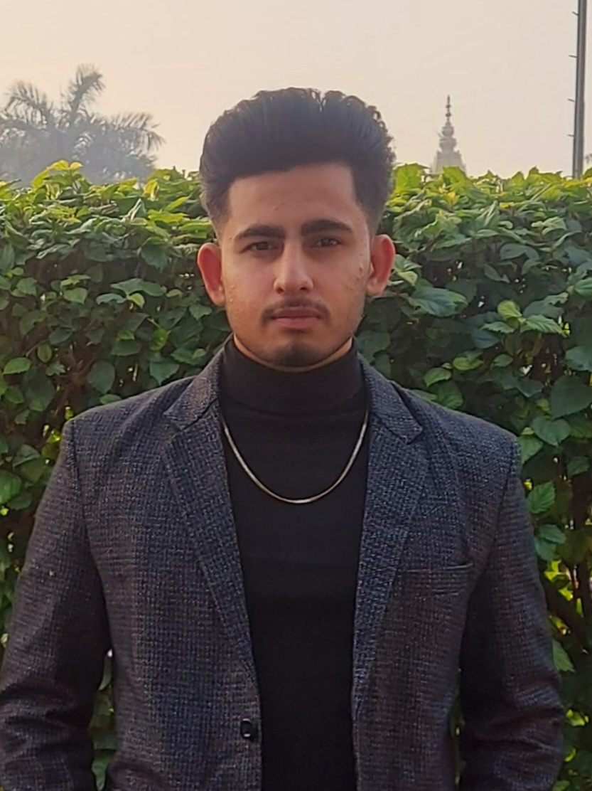

Hi! I'm Jashan Saini, a student at Punjabi University, Patiala, studying Electronics & Computer Engineering. I am currently focused on programming and web development, with a keen interest in Java and Python. Enthusiastic about translating ideas into functional websites, I enjoy the dynamic challenges that coding presents. Eager to learn and innovate, I'm honing my skills in HTML, CSS, JavaScript, Java, and Python. Beyond the code, I'm intrigued by technology's power to address real-world issues and enhance user experiences. Excited about the evolving landscape of programming, I am committed to contributing my skills to shape the digital future.
